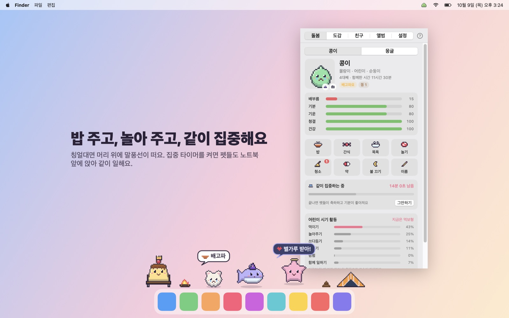
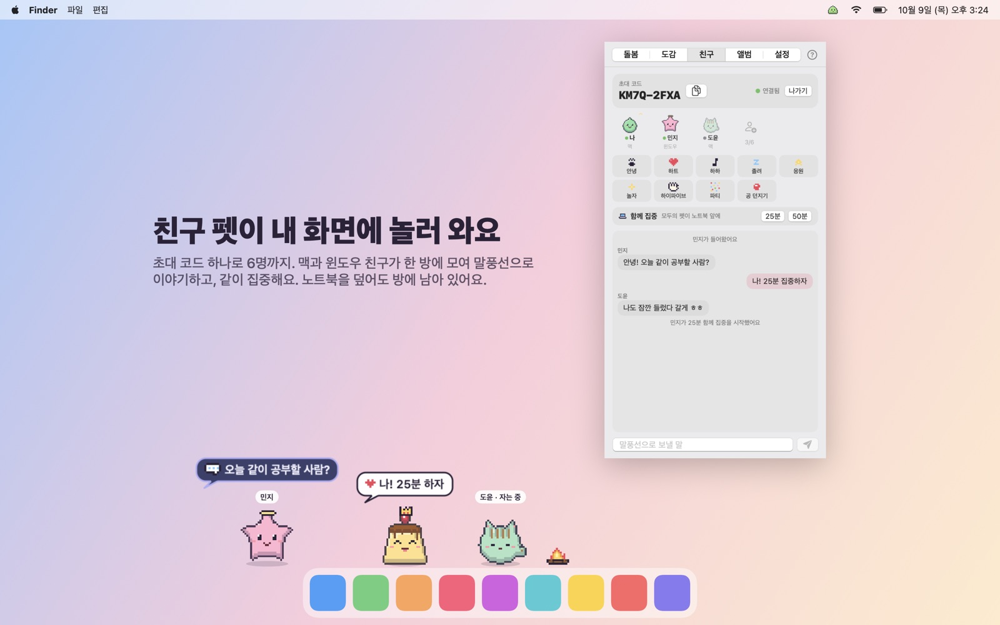
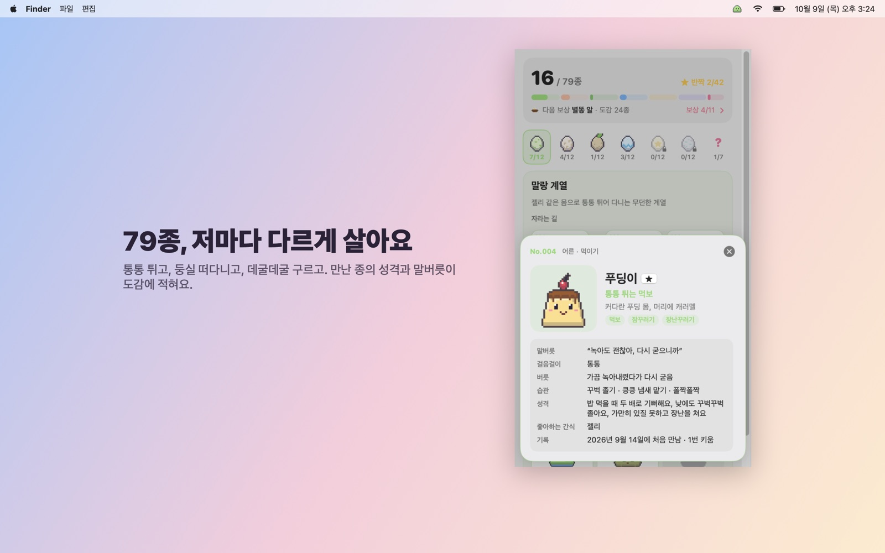
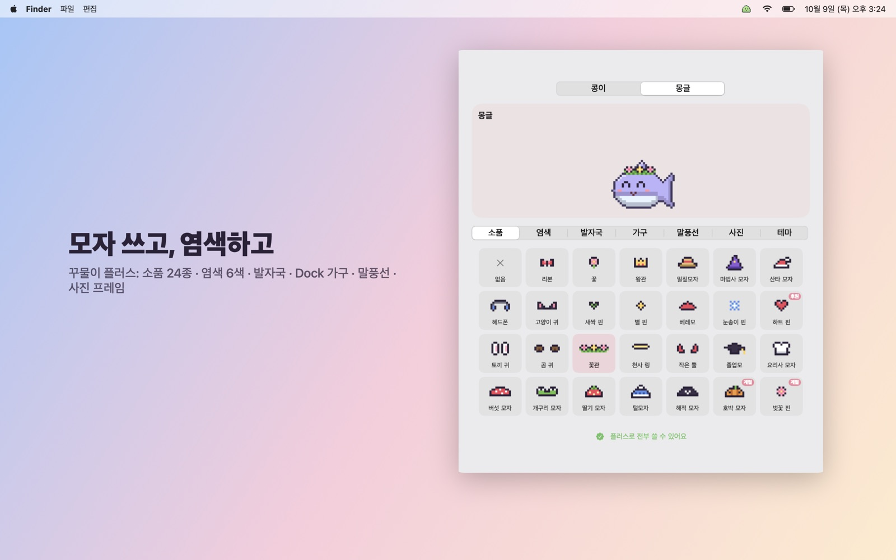
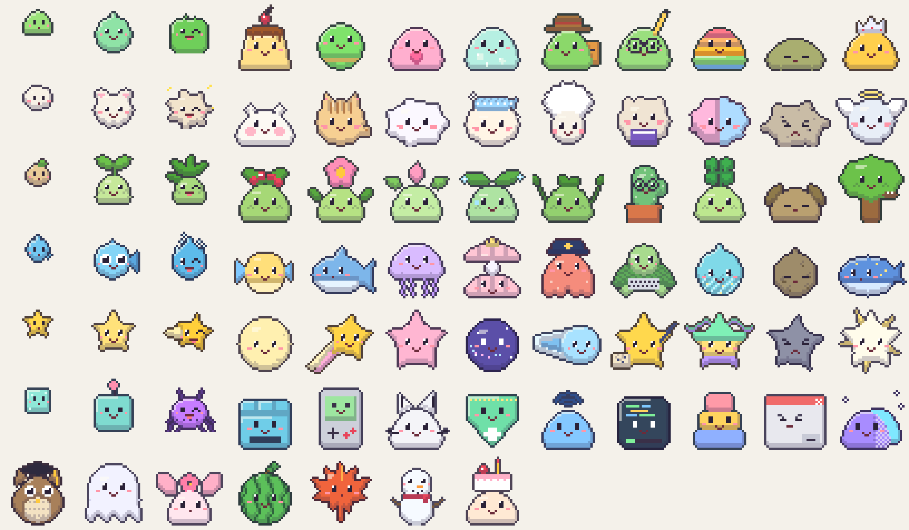

맥 Dock과 윈도우 작업 표시줄 위에 사는 작은 다마고치
무료판 4.2.0 · 처음 열 때 경고가 뜨면 아래 처음 열 때를 봐 주세요
메뉴바 아이콘 하나로 돌봄·도감·친구·꾸미기를 열고, 펫은 그동안에도 화면 아래에서 제 성격대로 살아요.




통통 튀고, 둥실 떠다니고, 데굴데굴 구르고. 돌보는 방식에 따라 자라는 모습이 달라져요.

개인이 만든 앱이라 Apple·Microsoft 인증서가 없어서 처음 한 번 경고가 떠요.
ZIP을 풀고 꾸물이.app을 응용 프로그램 폴더로 옮겨요. "확인되지 않은 개발자" 창이 뜨면 시스템 설정 > 개인정보 보호 및 보안 맨 아래의 그래도 열기를 눌러요.
ZIP을 풀고 Kkumuri.exe를 실행해요. "Windows의 PC 보호" 창이 뜨면 추가 정보 → 실행을 눌러요.
받은 ZIP의 SHA-256 지문이 아래와 같으면 이 페이지에서 올린 파일 그대로예요. 다르면 열지 말고 지워 주세요. 맥은 터미널에서 shasum -a 256 파일, 윈도우는 certutil -hashfile 파일 SHA256.
cf0f98dd4e6e08fde789c59a423999892a6764ca671dc5ac7a418773f50fb34c Kkumuri-4.2.0-mac-free.zip 48f4769594a07bce1c16b738ebc75cd0e48a5d8a6346aa8e03cc01c19592029a Kkumuri-4.2.0-windows-free.zip